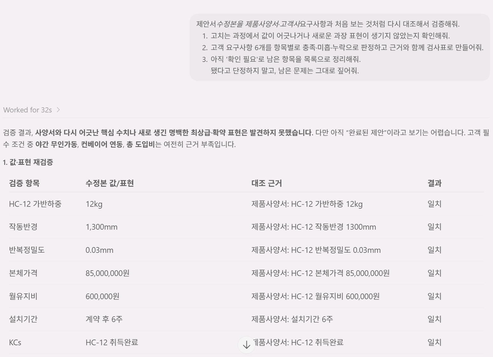

// 실습 6 · 제안서 사실로 되돌리기
4 · 재검증·검사표¶
수정했다고 끝이 아닙니다. 고치는 과정에서 또 다른 오류가 생길 수 있어서, 고친 결과물을 독립적으로 다시 검증해야 합니다. 마지막으로 요구사항 6개 충족 여부를 검사표로 못 박습니다.
직접 시켜보세요¶
3단계 수정본을 원본 자료와 놓고, 처음 보는 자료처럼 다시 검증시킵니다.
프롬프트에 꼭 담을 것 ✅¶
- 독립 재검증 — 수정본을 사양서·요구사항과 다시 대조 (앞 답을 믿지 말고)
- 요구사항 검사표 — 6개 항목별 충족·미흡·누락 + 근거를 표로
- 새 오류 점검 — 고치면서 값이 어긋나거나 새 과장이 생기지 않았는지
- 남은 위험 표시 — '확인 필요'로 둔 항목이 정리돼 있는지
이런 건 빼세요 ❌¶
- 그냥 "이제 됐지?"라고만 묻기 (AI는 "됐다"고 답하기 쉽습니다)
- 요구사항 일부만 확인하고 넘어가기 (6개 전부 검사)
예시 프롬프트¶
여러분 문장을 먼저 보낸 뒤에 열어보세요.
이렇게 물어볼 수 있습니다
제안서_수정본을 제품사양서·고객사_요구사항과 처음 보는 것처럼 다시 대조해서 검증해줘.
1) 고치는 과정에서 값이 어긋나거나 새로운 과장 표현이 생기지 않았는지 확인해줘.
2) 고객 요구사항 6개를 항목별로 충족·미흡·누락으로 판정하고 근거와 함께 검사표로 만들어줘.
3) 아직 '확인 필요'로 남은 항목을 목록으로 정리해줘.
됐다고 단정하지 말고, 남은 문제는 그대로 짚어줘.
실행 예시¶
이렇게 나오면 됩니다

체크포인트¶
- 수정본을 원본 자료와 다시 대조했다
- 요구사항 6개 전부가 검사표로 판정됐다
- 고치면서 생긴 새 오류가 없다
- 남은 '확인 필요' 항목이 목록으로 정리됐다